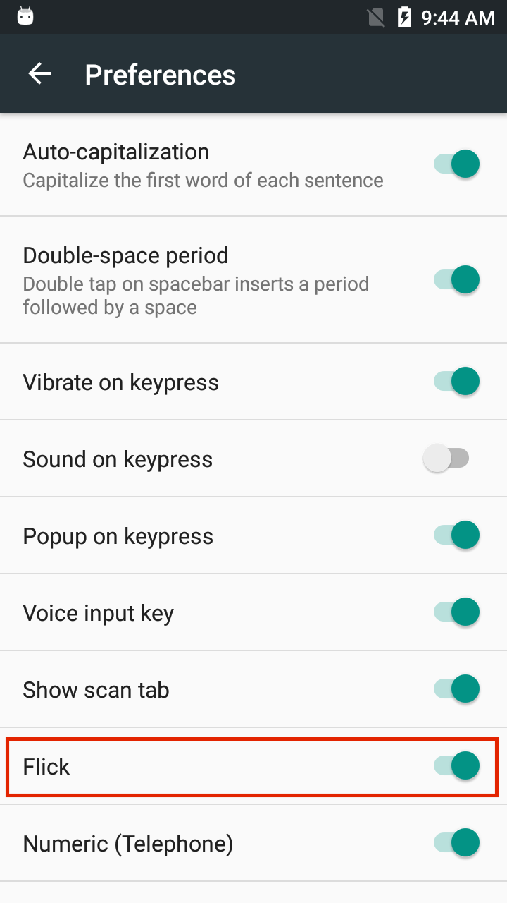
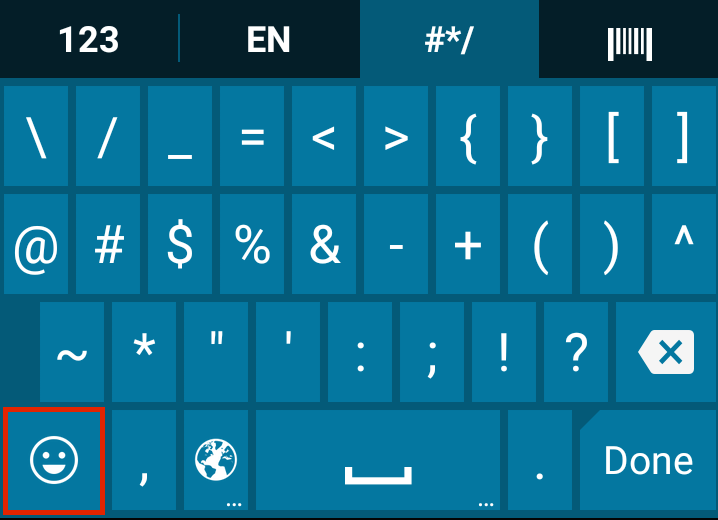
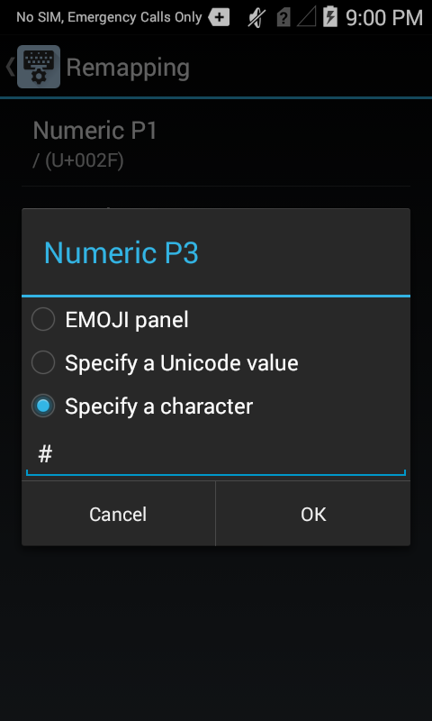

Overview
Enterprise Keyboard (EKB) is an enhanced and customizable version of the stock Android keyboard that provides a more effective means of inputting data into Zebra devices.
EKB 4.2 (and later) is configurable through an EMM system using EKB managed configurations.
Primary EKB Benefits
- Quick switching between languages
- Barcode scanning directly from the keyboard for data collection
- Programmable keys for performing specific tasks
- Finger-flicks for typing long-press characters
- Swipe-to-switch key layouts
- Populate Android's Personal Dictionary with custom terms and abbreviations
Also See
- Using EKB Managed Configurations | Now supports managed configurations through EKB schema
- Customizing Keyboard Settings | Section of this guide with further details
- Dynamically Switching Keyboards | Implementation details and sample code by Zebra engineering
Custom Key Layouts
EKB 3.2 (and later) supports the use of custom key layouts created with Enterprise Keyboard Designer (EKB Designer or EKD), a free GUI tool for Windows-based systems that provides control over fonts, images, key codes, layout transparency and many other layout properties. As many as 20 custom layouts (see below) can be deployed to devices and displayed programmatically using Android intents or DataWedge when specific input situations arise.
Support Notes
- DataWedge 7.4.44 (or later) is required to use custom layouts.
- TC21 and TC26 devices: DataWedge is not supported for use with custom key layouts.
Zebra recommends using EKB intent APIs to enable, set and show custom EKB layouts on TC21 and TC26.

Sample layouts made with Enterprise Keyboard Designer. Click image to enlarge, ESC to exit.
To learn more, go to the Enterprise Keyboard Designer Guide.
Customizing Keyboard Settings
This Section Covers:
- Assignment of keyboard languages
- Setting keyboard preferences
- Text correction settings
- Long key-press and other advanced settings
- Remapping programmable keys
Also See
- Using EKB with DataWedge
- Changing key layouts programmatically
- Navigation using TAB keys
- Scanner control
NOTE: Screen contents and colors vary by Android version.
Usage Notes
- Enterprise Keyboard can be used only after the device is unlocked.
- The layout tab name shown is sometimes NOT that of the layout being displayed.
- After deleting any text, the alpha-numeric tab is displayed regardless of the default display setting.
- Key pop-ups are displayed on long-press for secondary text, even if the pop-up option is disabled.
- The Pop-up on Key-press option functions intermittently.
- The emoji key does not always display the emoji character.
- On devices with an EKB version prior to 3.9.9.1, double-tap the shift key to release caps-lock.
- On devices with EKB 3.9.9.1 and later, the shift key behaves according to Android conventions; Single-tapping the shift key outputs the next key-press as upper-case and subsequent presses as lower case; double-tapping activates "caps lock,” and all characters that follow are output in upper-case. Single-tapping a caps-locked shift key releases the lock.
- Behavior of text correction and other EKB preference settings can vary based on the input field type.
Enterprise Keyboard Settings are accessed through the Android Settings panel:
1. Open the Settings panel on the device:

2. Tap the "Language and input" control:

3. Tap the Enterprise Keyboard Settings button:

5. Tap the setting(s) to be changed:

Languages
By default, Enterprise Keyboard uses the language selected in the "Language and input" part of the Android Settings panel:

Switch from system-selected language to one provided with Enterprise Keyboard:
1. Tap on "Languages" in the Enterprise Keyboard Preferences panel:
This version of Enterprise Keyboard includes the following languages:
- English (UK)
- English (US)
- French
- Italian
- German
- Spanish
- Russian
2. Uncheck "Use system language" checkbox:

With the "Use system language" preference unchecked, language packs become available for selection.
3. Tap one or more languages to select them:

Preferences
The Preferences section controls keypress feedback, default layout and tab selections, and other aids to productivity. NOTE: Enterprise Keyboard Designer 1.4 (and later) allows a custom keyboard layout to be selected as the default in the device, to appear whenever an input field receives focus (requires EKB 3.4 or later). See the EKD User Guide for more information.
Default settings are shown here:


EKB 4.1 adds mic tab, keyboard size adjusters.
Click to enlarge; ESC to exit.
Set preferences as desired:
- Auto-capitalization automatically capitalizes the first word of each sentence following a period.
- Double-space period automatically inserts a period and space after double-tapping the spacebar.
- Vibration on keypress sets the device to vibrate when a key is pressed (option seen only on devices that support vibration).
Vibration duration configurable in Advanced settings. - Sound on keypress plays a sound when a key is pressed.
Volume configurable in Advanced settings. - Popup on keypress displays a pop-up of the key being pressed (not applicable to keys 0–9 on the numeric layout).
- Voice input key displays a key for allowing Enterprise Keyboard to accept spoken input using the device microphone (on GMS-enabled devices only). Google Voice Typing must be enabled to use this key (see Language and input > On-screen keyboard panel). Also see voice input notes.
- Voice input tab displays a microphone tab for allowing Enterprise Keyboard to accept spoken input using the device microphone (on GMS-enabled devices only). Also see voice input notes.
- Show scan tab displays a tab for switching to the scanner to collect barcode data. Disabled by default.
Scanning in Enterprise Keyboard requires the DataWedge service to be enabled on the device. - Flick enables the alternate (long-press) character of a key to be input by "flicking" the key.
Not supported on VC80x or VC83x devices. - Numeric (Telephone) layout appears when the numeric keypad is in focus. When disabled, the Calculator layout is used.
- Keyboard Height used to reduce the height of the keyboard (as a percentage from 25–100 of the default height) when it appears on an external monitor as with Zebra Workstation Connect. See ZWC notes.
- Keyboard Width used to reduce the width of the keyboard (as a percentage from 25–100 of the default width) when it appears on an external monitor as with Zebra Workstation Connect. See ZWC notes.
Additional preferences:
(applies to devices with MX 7.1 and later only)
Navigation controls the means of navigating between keyboard layouts.
"Tabs" mode permits switching layouts by swiping across a layout (to bring up the adjacent one) or tapping directly on the desired layout tab. The tab bar is visible at all times except when spelling corrections (if enabled) are being displayed.
"Keys" mode permits keys to be used for switching layouts. Such keys are typically in the lower-left corner of the layout.
See important tab bar notes below.
Voice Input Notes
- For EKB voice input, the following MUST be running on the device and not in use by other apps:
- Android Speech Recognition (ASR) service (enabled by default)
- The
com.google.android.googlequicksearchboxpackage must NOT be disabled
- Voice input will NOT output offensive words, even if the "Block offensive words" feature is disabled.
- For proper operation, disable any voice input key setting (if so configured) before enabling the voice tab.
- Only English is supported for voice input through EKB.
Tab Configuration
Tab configuration allows a user or administrator to enable or disable the numeric, alphanumeric, symbol and/or scan key-layout tab(s), hiding them from view and preventing display of the corresponding layout.
Select prefer tab causes the selected tab to appear whenever EKB is invoked. This option is controlled from within the Tab configuration panel (shown below).

EKB 4.1 adds a mic tab.
Tab Bar Notes
- When Navigation mode is set to "Keys" and Voice Input Key and Show Correction Suggestions are enabled, the tab bar sometimes hides with some field-input types (numbers, email addresses, etc).
- If either the tab bar or the suggestion bar are enabled, both will appear.
- The tab bar will not appear if the Show Correction Suggestions bar and the Voice Input Key are both disabled.
- On GMS devices, if voice is enabled and the next-word suggestions feature is disabled, a blank suggestion bar will appear over the tab bar when words are being suggested.
- If the
TYPE_TEXT_FLAG_NO_SUGGESTIONSinput type is enabled, neither the tab bar nor the suggestion bar will appear. More about Android input types. - Enabling the Symbol tab disables remapping of the Numeric P3 key.
- Enabling the Alphanumeric tab disables remapping of the Numeric P4 and Symbol P1 keys.
- Enabling the Numeric tab disables remapping of the Alphanumeric P1 key.
- Navigation and Tab configuration features are supported only on devices with MX 7.1 and later.
- A custom key layout made with Enterprise Keyboard Designer 1.4 (or later) can be selected as the default whenever an input field receives focus (requires EKB 3.4 or later). More info.
Text Correction
Text Correction controls automatic corrections to typed text based the predefined parameters explained below. This functionality is provided by the Personal Dictionary, which also permits lists of custom or industry-specific terms and shortcuts (abbreviations) to be loaded into a device and presented as substitution suggestions along with those of the selected language(s).
NOTE: Enterprise Keyboard 3.4 (and later) supports "Canned text," which presents a list of predefined textual phrases when a key is pressed. This can help simplify, quicken and standardize responses to common questions or situations. See the Enterprise Keyboard Designer user guide to learn more.
Set preferences as desired:
Block offensive words prevents display of spelling suggestions that might be deemed offensive or insensitive as determined by external standards of decency.
Auto-correction automatically replaces misspelled words with those found in the Add-on and Personal dictionaries (see below). Replacements are executed by pressing the spacebar.
Show correction suggestions displays suggested words while typing but does not replace them when the spacebar is pressed unless Auto-correction is also enabled.
Personalized suggestions learns from communications and typed data to improve suggestions.
Suggest Contact names automatically displays contacts from the contact list when typing names.
Next-word suggestions looks at the word prior to the one being typed and displays words that might come next. This is sometimes referred to as "predictive text."
Personal Dictionary
The Personal Dictionary can be used to store industry-specific terms and their abbreviations to help improve the speed and accuracy of keyboard input. For example, if configured for a medical device, the acronym "gerd" could be added as a shortcut and replaced with "gastroesophageal reflux disease" whenever it was typed.
Notes:
- Terms can be added to the Personal Dictionary one at a time or in bulk.
- For bulk loading, see StageNow's Personal Dictionary Manager.
- There is no set limit on the length of terms and phrases that can be entered into the Personal Dictionary.
- When displayed, longer terms and phrases might be injected with an ellipsis (...) in the correction bar.
- Spelling corrections do not appear with all field types.
- For mass deployment, the Personal Dictionary must be populated beforehand using Zebra's StageNow tool.
- Personal Dictionary does not support display of contact names.
Add a term to the Personal Dictionary:
1. Tap "Personal dictionary" in the Text correction Preference panel:

2. Tap the language with which to associate the personal term(s). Select "For all languages" to display Personal Dictionary terms with every language pack:
3. Tap the plus sign (+) to define a new word or phrase:

3. Enter the word or phrase (and shortcut, if desired), then tap the gear icon to save.

4. Repeat Steps 3 and 4 until all terms are added. Words and/or phrases must be added one at a time. After each term is added, the terms list is displayed:
When a shortcut is typed as input, its associated term will appear in a list of spelling corrections:
 Press the spacebar to accept the highlighted word (which in this case is "Gerd") or tap the desired word or phrase to insert it.
Press the spacebar to accept the highlighted word (which in this case is "Gerd") or tap the desired word or phrase to insert it.
Note: To maximize screen space for apps, the spelling Correction Bar shares space with the keypad Navigation Tab bar. The nav bar fades out temporarily when corrections are displayed.
For bulk loading, see Personal Dictionary Manager.
Edit or delete a term:
1. Bring up the terms list and tap the term to be edited:
2. Edit the term or tap the trashcan icon to delete:
Add-on dictionaries
Add-on dictionaries contain predefined word corrections for each language installed on the device. From this panel, user actions are limited to viewing the list of installed Add-on dictionaries and deleting/reinstalling them. No further actions are permitted.

Advanced
The Advanced panel allows the setting of keypress feedback parameters for feedback types that are enabled in the Preferences panel. The image below shows sound feedback disabled (by default):

Keypress vibration duration sets the length of time (from 0–100ms) the device will vibrate to indicate that a key was pressed (default = 0ms).

Keypress sound volume controls the loudness (from 0–100) of the sound that coincides with a keypress (default = System setting).

Key long press delay sets the time (from 100–700ms) a key must be held down before being considered a long-press (default = 300ms).

Remapping Keys
Enterprise Keyboard designates certain keys as user-programmable: one in the alphanumeric layout, four in the numerical layout and one in the symbol key layout. The Remapping panel shows the current character and Unicode mappings for each key. The images below show default settings, including the alphanumeric and symbol P1 keys mapped to the EMOJI panel.
Learn more about EKB key remapping on Zebra devices and the use of Enterprise Keyboard Manager.
 One key can be remapped in the alphanumeric layout.
One key can be remapped in the alphanumeric layout.
 Four keys can be remapped in the numerical layout.
Four keys can be remapped in the numerical layout.

One key can be remapped in the symbol layout.
 The Remapping panel showing current settings of remappable keys; tap to edit.
The Remapping panel showing current settings of remappable keys; tap to edit.
To remap a key:
1. Tap EKB app > Remapping and tap on the key to be remapped:

2. Specify a Unicode value or type an alternative character to associate with that key:

3. Tap "OK" to store the setting. Changes take effect immediately.
DataWedge
The scan tab in Enterprise Keyboard uses scanning services provided by DataWedge, Zebra's data acquisition and delivery tool that's included on every Zebra device. DataWedge must be enabled on the device for the Scan tab to be operational.
 The scan tab is selected like a key layout.
The scan tab is selected like a key layout.
Click image to enlarge; ESC to exit.
Support Notes
- Scanning from EKB is disabled if DataWedge APIs are protected. Learn more about DataWedge Secure APIs.
- TC21 and TC26 devices: DataWedge is not supported for use with custom key layouts. To enable, set and show custom EKB layouts on TC21 and TC26 devices, Zebra recommends using EKB intent APIs.
To enable DataWedge (or confirm that it's enabled) on a device:
1. On the device, locate and tap the DataWedge icon:

2. From the DataWedge Profiles screen, tap the "hamburger" menu (see arrow), then Tap "Settings" on the menu:

3. The DataWedge Settings panel appears. Confirm that the "DataWedge enabled" box is checked.

Important: See the Scanner Control section, below.
For more information about scanning with Enterprise Keyboard, see Enterprise Keyboard Setup.
Also refer to the DataWedge User Guide for complete documentation.
Dynamic Input Method
This feature applies to native apps only.
Enterprise Keyboard (1.2 and later) supports programmatic access to the Input Method Editor (IME), which can dynamically change the input method depending on the selected field. For example, when the cursor enters a field intended for barcode data, the scan tab can be automatically invoked and the device scanner used to populate the field. The keyboard returns when the cursor lands on a text field, and so on.
To set the input method as static:
- Include the line
android:privateImeOptions="scan"in the <EditText> field of theStaticLayout.xmlfile as shown below:

The EditText parameter of the StaticLayout.xml file, in Android Studio. Click image to enlarge, ESC to exit.
To set the input method as dynamic:
- Call the
setPrivateImeOptions()method with “scan” as the parameter, as below:editTextTest.setPrivateImeOptions("scan")
This feature applies to native apps only.
Scanner Control
It's important to note that control of a device's barcode scanning hardware is exclusive. When an application that uses the scanner is active (such as one made with EMDK that uses the Barcode API), neither DataWedge nor the Enterprise Keyboard scan tab will not operate. Likewise, when an app such as Enterprise Keyboard controls the scanning hardware, other apps are prevented from doing so. It is therefore important to understand how to take control of a device's scanner hardware and if necessary, release it to other apps when scanning is complete. For more information, see the section on Disabling DataWedge in the DataWedge User Guide.
Tab-key Navigation
The Tab key is designed to move the cursor or UI focus from one text field or UI component to the next. On apps that are unaware of this context, the Enterprise Keyboard Tab key might input spaces instead of moving the cursor. For HTML apps, Zebra recommends using the Tab key to navigate from field to field. For help with native-app navigation, please refer to Android developer docs for information about Android Tab-key navigation.
ZWC Usage Notes
Enterprise Keyboard 4.1 introduced support for Zebra Workstation Connect, a solution that transforms a Zebra mobile computer into a desktop computing experience, complete with external monitor, keyboard and mouse. Use of EKB with ZWC is subject to the requirements, behaviors and restrictions listed below.
Requirements
- One or more Zebra devices compatible with ZWC running Android 11 or later
- Zebra Workstation Cradle (corresponding to device(s) in use)
- LifeGuard OS update
11-23-13.00-RG-U00(or later) installed - Workstation Connect 1.4.86 (or later) installed
- Enterprise Keyboard 4.1 (or later) (
com.zebra.mdna.enterprisebrowser.apk) installed
EKB 4.1 (and later) allows keyboard size adjustments.
Click to enlarge; ESC to exit.
Behaviors and Restrictions
- Keyboard height and width are configurable ONLY through Managed Configurations or the EKB Preferences panel on the device (see screenshot above).
- EKB layouts cannot be used:
- Simultaneously on primary (built-in) and secondary (external) screens.
- If a physical (USB) keyboard is connected.
- Custom layouts should NOT be set as the default layout through Enterprise Keyboard Designer.
Instead, use DataWedge Profile0 to set the default layout. - Avoid desktop resolution of 800x600, which causes EKB Suggestion Bar to overlap keys.
- Zebra recommends closing any EKB layout on the primary screen before:
- Docking or undocking the device.
- Moving an app from primary to secondary screen (or vice versa).
- Zebra recommends closing any EKB layout on the secondary screen before:
- Resizing, minimizing or maximizing an app.
- Opening the "All Apps" panel, notification panel or volume controls from the ZWC taskbar.
- When an app is changed from full-screen to minimized view on secondary screen, EKB sometimes does not fit properly.
To correct, close and relaunch the app in minimized view. - The EKB layout with focus switches to its preferred tab when a USB keyboard is connected.
- EKB 5.2 (and later) supports the following special characters:
- International (lower):
à â ä ç é è ê ë î ï ñ ô ö ù û ü ÿ - International (upper):
À Â Ä Ç É È Ê Ë Î Ï Ñ Ô Ö Ù Û Ü Ÿ - Punctuation:
. , ; : ’ “ ( ) < > ? ! - _ = + / \ | % @ # $ & * - Other:
÷ × ± \ ± @ £ ¢ ¤ ¬ ¦²³ ¼ ½ ¾
- International (lower):
Also See
- Using EKB Managed Configurations | Now supports managed configurations through EKB schema
- Dynamically Switching Keyboards | Implementation details and sample code by Zebra engineering
- Exploring the Enterprise Keyboard API | Working with EKD-made Custom Layouts by Zebra engineering